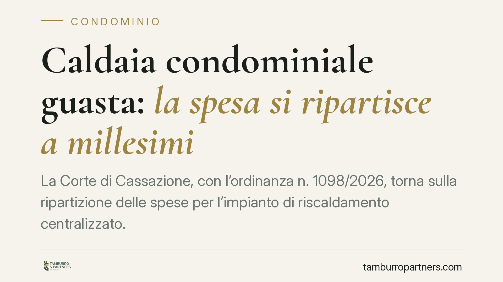

Caldaia condominiale guasta: la spesa si ripartisce a millesimi
La Corte di Cassazione, con l'ordinanza n. 1098/2026, torna sulla ripartizione delle spese per l'impianto di riscaldamento centralizzato. La riparazione è manutenzione straordinaria e grava su tutti i condomini a millesimi, incluso chi si è distaccato. Il cambio di combustibile resta una modifica migliorativa, non un'innovazione. Chiariamo cosa significa per amministratori e condomini.

Il caso deciso dalla Cassazione
Un condominio deve riparare l'impianto di riscaldamento centralizzato. Sorge la lite consueta: chi paga, e in che misura? Un condomino si era distaccato dall'impianto, dotandosi di un sistema autonomo, e sostiene di non dover concorrere alla spesa. In più, l'assemblea aveva deliberato il passaggio a un diverso combustibile, e qualcuno contesta la decisione come innovazione soggetta a maggioranze rafforzate.
La Corte di Cassazione, con l'ordinanza n. 1098/2026, respinge entrambe le tesi e ribadisce princìpi già consolidati, ma spesso ignorati nella pratica assembleare.
Inquadramento normativo
L'impianto di riscaldamento centralizzato rientra tra le parti comuni ai sensi dell'art. 1117 cod. civ. Le spese per la sua conservazione si ripartiscono secondo l'art. 1123 cod. civ., che distingue tra spese necessarie alla conservazione dei beni comuni, divise in proporzione al valore delle singole unità (quindi a millesimi), e spese per il godimento differenziato.
La riparazione dell'impianto è manutenzione straordinaria finalizzata alla conservazione del bene comune. Per questo grava su tutti i condomini a millesimi di proprietà, a prescindere dall'uso effettivo.
Rileva qui l'art. 1118 cod. civ., che disciplina il distacco. Il comma secondo consente al condomino di rinunciare all'uso dell'impianto centralizzato, ma precisa che il rinunciante resta tenuto a concorrere al pagamento delle spese per la manutenzione straordinaria dell'impianto e per la sua conservazione e messa a norma. In altre parole: chi si distacca risparmia sui consumi, non sulle spese di conservazione del bene comune.
Quanto al cambio di combustibile, la Corte lo qualifica come modifica migliorativa dell'impianto esistente e non come innovazione ai sensi degli artt. 1120 e 1121 cod. civ. Non si crea un'opera nuova né si altera la destinazione del bene: si rende più efficiente ciò che già esiste. Di conseguenza, non servono le maggioranze qualificate previste per le innovazioni dall'art. 1136 cod. civ., ma le ordinarie maggioranze assembleari.
Implicazioni pratiche
Per il condomino distaccato la conseguenza è netta. Il distacco incide sulla ripartizione dei consumi, non su quella delle spese straordinarie. Pensare di azzerare ogni contributo rinunciando all'impianto è un errore che espone a decreti ingiuntivi.
Per l'amministratore la pronuncia offre una base solida per gestire il riparto senza esitazioni. La spesa di riparazione va imputata a tutti i condomini secondo la tabella millesimale di proprietà. Il rischio è l'opposto: escludere il distaccato dalla ripartizione straordinaria, scelta che può essere contestata dagli altri condomini.
Per l'assemblea il chiarimento sul combustibile semplifica le decisioni di efficientamento energetico. La delibera di cambio di alimentazione segue le maggioranze ordinarie, riducendo il rischio di impugnazione per difetto di quorum.
Resta ferma la distinzione tra manutenzione straordinaria e consumi: su questi ultimi il distaccato non paga, purché il distacco sia stato eseguito correttamente, senza squilibri termici o aggravi per gli altri condomini.
Cosa fare in concreto
- Verificate la tabella millesimale di proprietà prima di approvare il riparto della spesa di riparazione: è quella, non la tabella consumi, a governare la manutenzione straordinaria.
- Includete il condomino distaccato nel riparto delle spese di conservazione e messa a norma dell'impianto, documentando la causale in sede di preventivo e consuntivo.
- Qualificate correttamente l'intervento nella delibera: distinguete tra riparazione (straordinaria), consumi e innovazione, perché da questa qualificazione dipendono maggioranze e riparto.
- Convocate l'assemblea con ordine del giorno chiaro per il cambio di combustibile, indicando che si tratta di modifica migliorativa a maggioranza ordinaria.
- Conservate la documentazione tecnica del distacco e delle condizioni di efficienza dell'impianto, utile in caso di contestazioni sui consumi.
Un chiarimento utile, non una novità
L'ordinanza non introduce regole inedite: consolida un orientamento. Il valore pratico sta nel ridurre il contenzioso ricorrente nei condomini con impianti datati. Consigliamo di adeguare preventivamente i criteri di riparto e i verbali assembleari a questi princìpi, per prevenire impugnazioni e opposizioni a decreto ingiuntivo.
---
*Contributo informativo a cura di Tamburro & Partners - Avv. Giuseppe Tamburro. Non costituisce parere legale.*
Ogni condominio ha una storia a sé.
Se gestisci un'amministrazione e vuoi un confronto su una specifica questione condominiale, scrivi allo studio. Ti rispondiamo entro un giorno lavorativo.